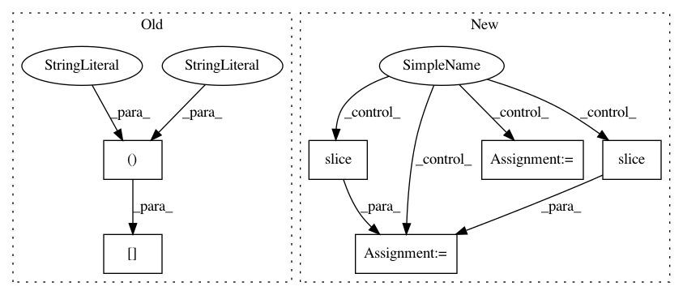

a218a906c70ef3b6e64267eb5596e4ad54cf0d96,batchflow/models/eager_torch/layers/resize.py,Crop,forward,#Crop#Any#,113
Before Change
elif (i_shape[2] < r_shape[2]) or (i_shape[3] < r_shape[3]):
// Increase input tensor"s shape by zero padding
output = torch.zeros(*i_shape[:2], *r_shape[2:])
output[:, :, :i_shape[2], :i_shape[3]] = inputs
else:
output = inputs
return output
After Change
// Increase input tensor"s shape by zero padding
output = torch.zeros(*i_shape[:2], *r_shape[2:])
shape = [slice(None, c) for c in i_shape[2:]]
shape = tuple([slice(None, None), slice(None, None)] + shape)
output[shape] = inputs
else:
output = inputs
return output
In pattern: SUPERPATTERN
Frequency: 3
Non-data size: 6
Instances
Project Name: analysiscenter/batchflow
Commit Name: a218a906c70ef3b6e64267eb5596e4ad54cf0d96
Time: 2019-12-04
Author: nikita_007_94@mail.ru
File Name: batchflow/models/eager_torch/layers/resize.py
Class Name: Crop
Method Name: forward
Project Name: scikit-image/scikit-image
Commit Name: 7444b7a80e5fd15f62412bd04984c605d4939013
Time: 2016-05-14
Author: metz.jp@gmail.com
File Name: skimage/segmentation/_clear_border.py
Class Name:
Method Name: clear_border
Project Name: tgsmith61591/pmdarima
Commit Name: c87adf90282107bd8a8631fbe3200e30dcade8ef
Time: 2020-01-03
Author: tgsmith61591@gmail.com
File Name: pmdarima/arima/arima.py
Class Name: ARIMA
Method Name: fit